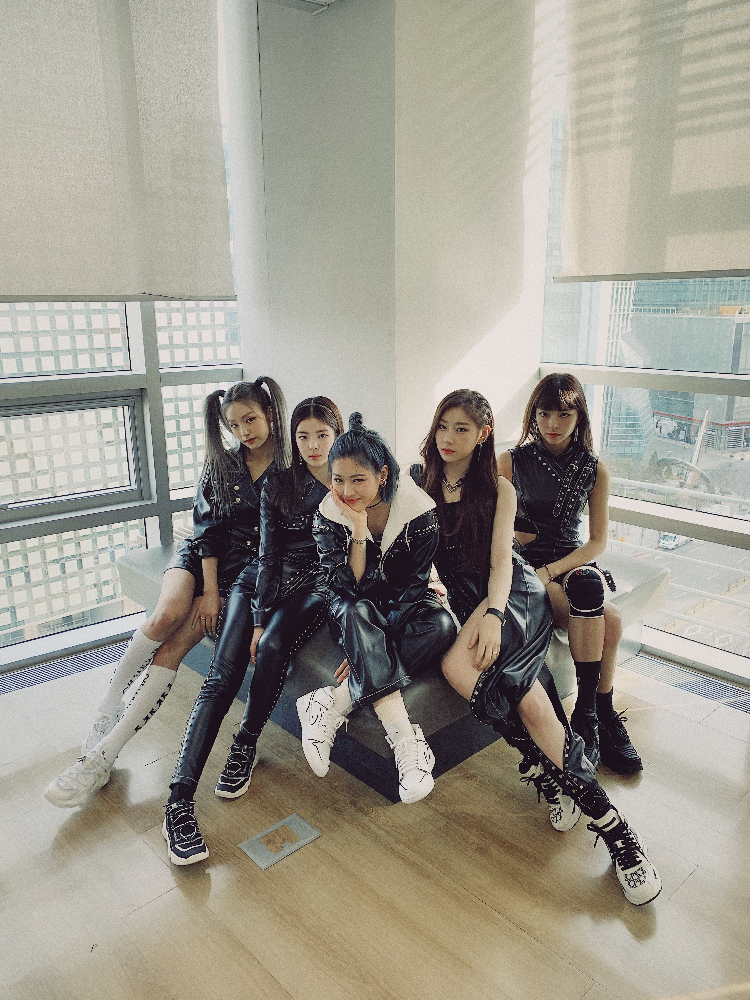

See my work
Thank you to come my page.I'm a student of SWU and majoring international study.
I'm lerning about English and Germany.So, I'm going to go to the USA on Octber.
Now, I'll introduce for Ameriacan culture and Germany cluture. Enjoy here!
This place where I'm studying English and Germany. The place name is SWU.
Every day I go to there.
In SWU, it is said that SWU is a super Glaobal Campus.
Actually, there are two American campus. First, British School in Tokyo and Temple University Japan.
I want to meet students in TUJ, because I want to talk with them in English.
The place is Showa Boston. The place where I'll go to study abroad for half year.
This is the first campas of Showa Womans University.There are a lot of program and volanteer at there.
I want attend them and I'm looking foward to attend it!
It is of coruse you know very well, New York Times Scqure! You Know that this place is famous for NewYear's countdown,
some famouse restaurant, and there are a lot of movie theater and so on.
If you go to the USA you must go there! And I want to go too so much! And I would like to experience NewYear's countdown!
It is a Neuschwanstein Castle in German. It is famous for model of Cindelera castle of Disney land.
It is so beautiful and cool! It was made by LudwigⅡ in 19 century.
This article type is called Gothic Architecture.
I want to go there and want to held wedding party! lol:)
It is a German's famous food. Maybe, you image german is famous for sausage.I think so too. German is famous for sausage and potato's food.
Like potato's soup, potato's salada and so on. In german, there are kind of sausage. I always eat it in the morning.
So, I love it and I want to go to german and I want to eat all of kind sausage.
You try with me?

Do you know these girls? They are ITZY! They are from korea. Do you know TWICE? ITZY is sister group of TWICE.
They are so cute and cool. Their songs thema is love my self! and best of me. These songs always encourage me, when I was tired,
have a problem. So I love them.
DO you know him? He is YONJYUN, member of TOMMOROW X TOGETHER. TXT is korean group.
He can sing and dancing very well. Because he leane both long time in his office.
He was a trainee. He practice so hard. when his trainee days, always he was the best trainee.He is a top of trainee.
Then, he became an artist. He is a hard woker. After became an artist, also he always practice hard, so I love him.